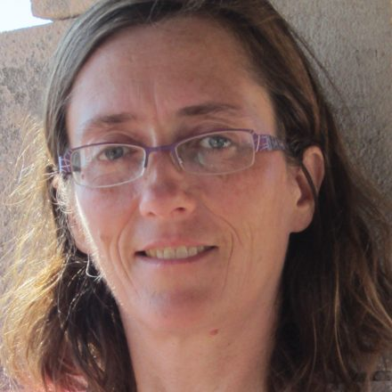
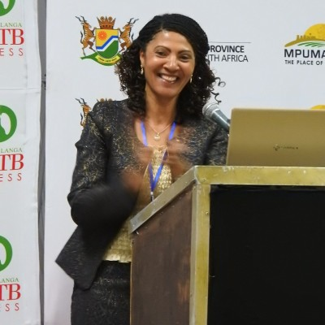
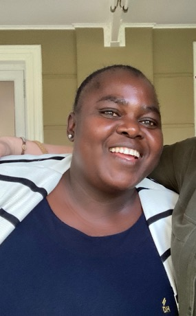

LUCIA D’AMBRUOSO
Principal Investigator
University of Aberdeen; Umeå University; Stellenbosch University; NHS Grampian.
The team
VAPAR has been built through sustained collaboration among communities, Community Health Workers, Mpumalanga Department of Health, the MRC/Wits Agincourt Research Unit and university partners. The people shown here have led different phases of research, facilitation, implementation, training, evaluation and policy engagement.
Principal Investigator
University of Aberdeen; Umeå University; Stellenbosch University; NHS Grampian.

Co-Principal Investigator
Professor, Queen Margaret University, Edinburgh.
Research and implementation lead
MRC/Wits Agincourt, University of the Witwatersrand. Leads implementation, facilitation and evaluation.
Community engagement and evaluation lead
MRC/Wits Agincourt, University of the Witwatersrand.
Early career research contributor
Contributed to multiplier analysis, synthesis and dissemination under the MRF award.
Co-Investigator
Professor, University of the Witwatersrand.
Methodologist
Scientist, South African Medical Research Council.
Co-Investigator
Professor, University of the Witwatersrand.
Co-Investigator
Coordinator, Tshemba Foundation.
Co-Investigator
Independent consultant and long-standing VAPAR collaborator.
Department of Health partners

Chief Director: Primary Health Care
Mpumalanga Department of Health.

Co-Investigator
Senior Clinical Manager, District Clinical Specialist Team, Mpumalanga Department of Health.

Co-Investigator
Provincial Research Director, Mpumalanga Department of Health.
Community and training leadership

Master trainer and Community Health Worker
Supported province-wide training delivery, facilitation, peer learning and policy-facing engagement.
Master trainer and Community Health Worker
Supported province-wide training delivery, facilitation, peer learning and policy-facing engagement.
Founding leadership and legacy

Founding Co-Principal Investigator
Professor, Umeå University. Peter died in August 2020; his scientific leadership and generosity remain part of VAPAR’s foundations. Read our tribute to Peter.